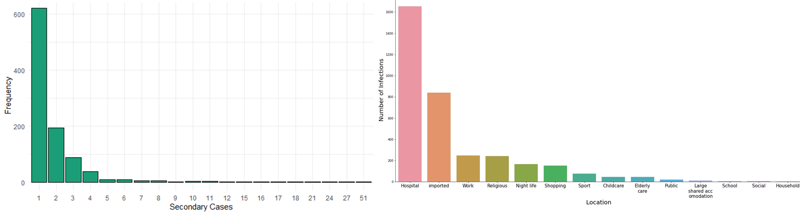
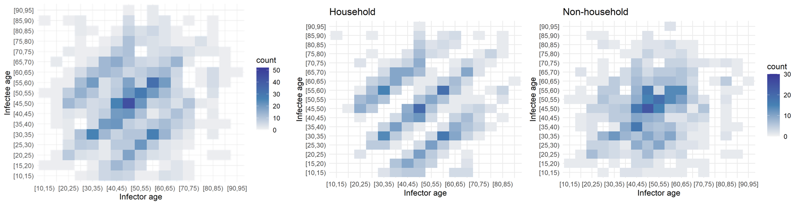

Heterogeneity in SARS-CoV-2 transmissibility
Summer Project | Data Science Internship
Hollingsworth group | Big Data Institute

Not all infectors are born equal - something that became clear early on during the COVID-19 pandemic. It was observed that while most individuals do not infect anybody, a few primary cases were responsible for a large number of secondary infections. How do we characterise the secondary case distribution of COVID cases? There was data from sources across the world which indicated that SARS-CoV-2 transmission was clustered with relatively high aggregation. Most modellers turned to the negative binomial distribution, a popular choice. This project sought to combine data from multiple public repositories, so as to test this assumption.
Research question
Is the negative binomial distribution necessarily the best assumption for secondary case distribution in all scenarios?
Or, in other words, how does the setting of SARS-CoV-2 infection affect the shape of the secondary case distribution?
Several observations could be made about the transmission of COVID-19:
- It is heterogeneous: since some individuals do not infect anybody, while others infect a large number of people, there is a higher number of "maximum new cases".
- Super-spreading events: this was the name given to these events in the media; they received high media attention and were covered in the news consistently.
- Distributions: given these transmission dynamics, thinking in terms of distributions is more productive than considering parameters, such as R0 (the basic reproductive number, or the average number of new infections a typical case of infection would add to the population), as fixed points.
Aims and Objectives
- Characterise the R-distribution i.e. the secondary case distribution
- How does the contact pattern affect the shape of the secondary case distribution?
- Assume distinct settings comprise distinct contact patterns
- How does the setting of spreading affect the shape of the secondary case distribution?
Mapping data from multiple sources
Originally, this project was meant to make use of case data from the UK Office for National Statistics (ONS); however, due to remote working restrictions, it was impossible to get secure access to the database. So, together with Olivia, a summer research assistant I was working with in a team, we turned to publicly available data on COVID transmission. We were struck by the lack of publicly available data - there were many private data sets but few public ones.
It was interesting to note that the resolution of the available data decreased over time, with very detailed early pandemic records. Media and news reports were a substantial chunk of "interesting data." However, they were biased towards the super-spreading events at earlier stages of the pandemic.
We found four data sets which could by mapped together. Here is an overview of the kinds of information we would be tasked with "translating" between data sets.- Korean Contact Tracing: patients, infectors (where known), detailed location of infection, age, sex, date confirmed that they had the virus.
- COVID-19 Settings of Transmission: setting (category), indoor/outdoor, country, city, reference (predominantly news articles), number of clusters, primary cases (where known), secondary cases (where known), total number of cases per cluster.
- Transmission Pairs:infector, infectee, 'cluster risk' (family, social, work, travel), cluster generation, pair type (imported or local), dates of primary and secondary infections.
- China Contact tracing:infector, infectee, ages, city, province, dates of infection, household/non-household but no information on settings.
We categorised contact tracing data roughly under the headings used by the transmissions database but merged some categories together. We also categorised the largest contact tracing data by imported vs local cases and whether those events were "family", "social", "work" or "travel", so we could combine them. The plot on the left blow shows the distribution of the number of secondary cases from the aggregated data set. There were a total of 993 clusters of secondary infections. These included patients whose exact infector was known.
The plot shows that most people only infected one other person. However, there was one problem: we had no data about all the
people who had not infected anybody else.
Two of our datasets only showed only transmission pairs. Our largest dataset (the contact tracing dataset from Korea)
listed cases where it cannot be determined who the infector was. Infectors were listed within the dataset as patients
too but can we really assume that any patient who is not later listed as an infector did not spread the virus?
Moreover, the paper that used this dataset was only concerned with super-spreading events.
For that reason, households are really underrepresented within these datasets.
To address this, we could focus on zero-truncated models. However, another concern we had was about how the quality
of contact tracing, which varied so significantly by setting.
The graph on the right in the figure below shows the distribution of the cases by transmission setting. It reveals another problem: in the contact tracing datasets, for most cases imported from overseas or within hospitals, where the infector can be determined exactly and with ease. However, these two groups were so large, that almost all other settings disappeared. Importantly, we could look at clusters instead of confirmed secondary cases which would really increase the number of outbreaks we have for each setting. In some settings it would be harder to determine what constitutes a cluster (e.g. hospitals).
These two challenges: the lack of primary cases that infected nobody else, and the underrepresentation of most transmission settings lead to an inconclusive answer to the research question. We thought that simulations could be used to pursue the question further. For example, a branching process model could be adapted to generate an appropriate transmission chain or pairs data. By specifying parameters found in the literature, we could compare simulated data to the real data sets. However, the project took another turn.
Who is infecting whom? Contact and transmission patterns
Although we could not use the aggregated data set to test the original research question in a quantitatively rigorous manner, we set out to use creative visualisations to explore what else the data set could reveal about the COVID transmissibility.
Age had an impactful effect on the transmission dynamics. I started out by binning the infectors (primary infections) amd infectees (secondary cases) and plotting their ages against each other. This yielded the leftmost plot: an age-stratified infection matrix. Already, some patterns were visible; however, these became apparent after the household/non-household segregation of the data (the two other panels on the right). It appeared that within households there were clear inter and intragenerational interactions. While non-household transmission took place mostly among people of the same age.
The next factor I investigated was the effect of the onset of the nation-wide COVID-19 restrictions at the time of data collection. I built a timeline of the major events and divided the data set into pre- and post-lockdown, keeping the household and non-household distinction. I also noticed that children were missing in the data. While children had been tested, the attack rate seemed low according to the WHO Joint Mission Team.
The split in the data was even between household and non-household but cases appeared to double after the lockdown. Below, I "scrambled" the data set to compare a few randomised configurations of the transmission dynamics to the ones observed pre- and post-lockdown in and outside of households. Notably, pos-lockdown the inter-generational household transmission patterns appeared to be more readily visible. However, the uneven split in the data meant that examining data from other data sets could have shed more light on whether there truly was a tangible change in household transmission dynamics after the onset of restrictions.

| Pre | Post | Total | |
|---|---|---|---|
| Household | 104 | 224 | 328 |
| Non-household | 110 | 222 | 332 |
| Total | 214 | 446 |
Although I was not able to answer the original research question in this project, working with data from different sources and failing to find a conclusive answer to the research question helped me appreciate the importance of being resilient and creative with data sets that may appear uninformative. Finding creative and informative ways of summarising the data visually and exposing trends visually was a valuable skill I furthered in the process.